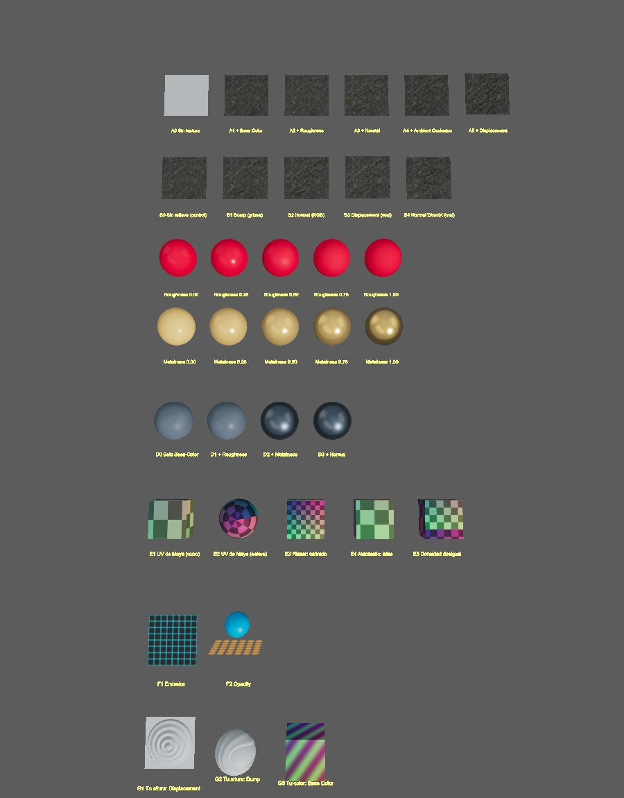
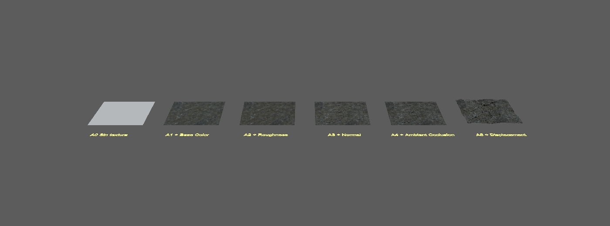
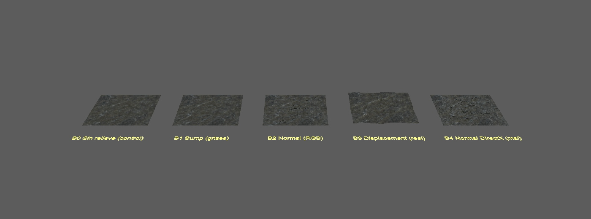
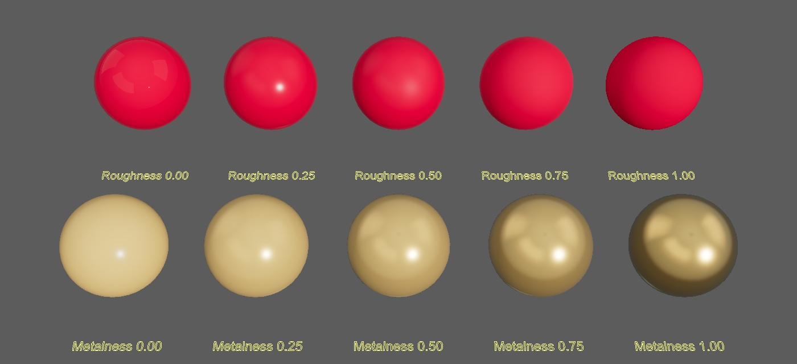
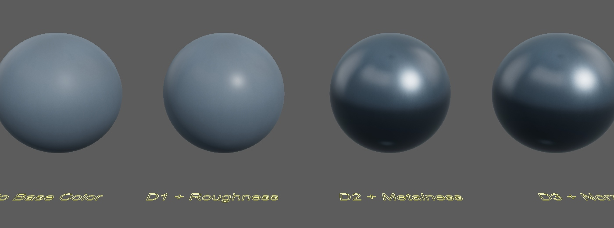
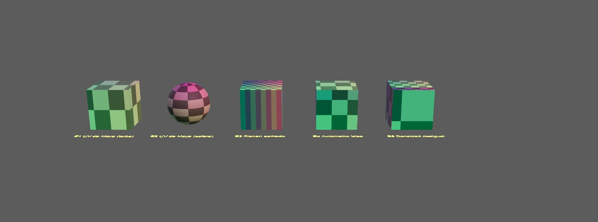
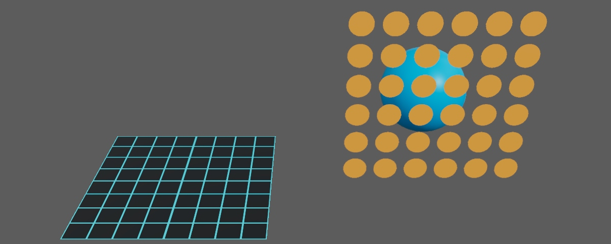
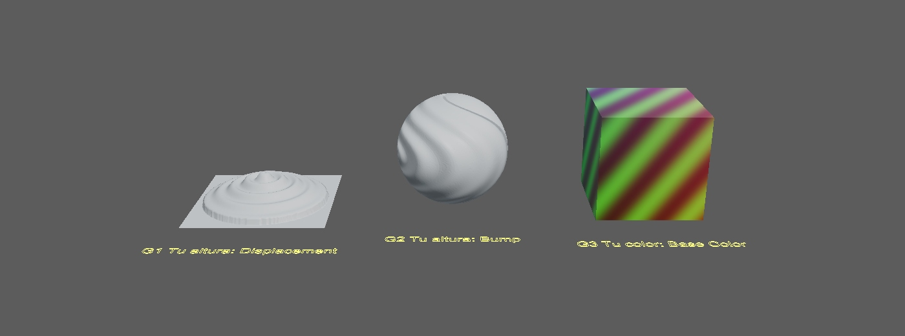

Diseño para 3D · clase 10 · guía para el profe
Qué hay en el proyecto de Maya, cómo se muestra, cuánto dedicarle a cada parte y qué abrir en cada momento.
Una sola escena de Maya con siete filas de estaciones (A a G). Cada estación es un objeto con su propio material ya armado, un letrero amarillo en el piso con su nombre y, en el Outliner, el mismo nombre. La idea es la de videojuegos: tú recorres la escena en vivo y ellos pueden repetirlo solos después.
Todo está pensado para el viewport, sin render de Arnold. Se usa el shader standardSurface (el que Maya trae desde la 2022).
ejemplos/diseno-3d/texturas/
workspace.mel marca la carpeta como proyecto
scenes/clase_texturas.ma
sourceimages/
Rock030/ Metal032/ Rust004/ sets PBR (ambientCG, CC0)
uv/ entorno/ canales/ ejercicio/ imágenes propias
Rust004 no está usado en la escena: queda libre para que lo uses en el taller.

Vista desde arriba: de la fila A (arriba) a la G (abajo).
texturas. Luego File > Open Scene... y abre scenes/clase_texturas.ma. Sin el Set Project las texturas salen como faltantes.texturas completa) y recuérdales el Set Project.| Quieres... | Haz |
|---|---|
| Ir a una fila | View > Bookmarks del panel (hay uno por fila: A_escalera_de_mapas, B_relieve, C_roughness_y_metalness, D_metal, E_uvs, F_otros_canales, G_tu_textura). Otra forma: clic en el objeto en el Outliner, mouse sobre el viewport y F. |
| Orbitar / mover / acercar | Alt + clic izquierdo / central / derecho (o rueda) |
| Encuadrar lo seleccionado / todo | F / A |
| Sombreado: alambre, liso, texturas, luces | 4 5 6 7 |
| Aislar una fila para ver solo eso | Seleccionar el grupo, en el menú del panel Show > Isolate Select > View Selected |
| Ver los nodos de un material | Seleccionar el objeto, abrir el Hypershade y usar Graph > Input and Output Connections (o su botón en la barra) |
| Cambiar un valor en vivo | Seleccionar y Ctrl+A; para la luz, seleccionar luz_sol y girar Rotate Y en el Channel Box |
Objeto A3_normal → material mat_A3_normal → nodos tex_A3_color, tex_A3_normal, bump_A3. La letra y el número de la estación son el mismo del letrero y de las diapositivas.
| Bloque | Min | Qué abres |
|---|---|---|
| Panorama y conceptos (diapositivas) | 20 | Sin Maya, o la vista general |
| Mapas y materiales (55 min) | ||
| A · Escalera de mapas | 20 | Hypershade + Attribute Editor |
| B · Relieve de tres formas | 20 | Hypershade, luz_sol, órbita rasante |
| C · Valores de Roughness y Metalness | 8 | Attribute Editor |
| D · Metal con mapas | 7 | Hypershade |
| Descanso | 10 | |
| UVs (60 min) | ||
| E · UVs con el damero (E1 a E5, cortar y coser en vivo) | 60 | UV Editor, menú UV |
| Otros canales y su turno (30 min) | ||
| F · Emission y Opacity | 10 | Attribute Editor |
| G · Tu textura (cambian la imagen por la suya) | 20 | Attribute Editor, Photoshop o similar |
| Taller libre (el reto lo defines tú en clase) | 50 | Sets de sourceimages |
| Cierre | 15 | Diapositiva de contacto |
Si vas corto de tiempo, recorta primero D, luego F. A, B y E son el corazón de la clase.

tex_A1_color en Base Color. Explica: la imagen entra por un nodo file y el material la usa.tex_A2_rough). A0 y A1 tienen roughness bajo fijo (brillan como plástico) y en A2 la roca se vuelve mate. Es sutil: acércate con F.bump_A3 (bump2d en modo Tangent Space Normals) hacia Normal Camera.multiplicar_A4 multiplica el color por el Ambient Occlusion. Se nota en las grietas.deformador_A5 (Texture Deformer, se ve en el Channel Box bajo INPUTS). Aquí el relieve es real.tex_A1_color y tex_A2_rough y compara el campo Color Space: sRGB para imágenes de color, Raw para datos (roughness, normal, metalness, AO, altura).El shader de displacement de verdad solo se ve al renderizar. Como trabajamos en viewport, usamos un deformador que mueve los vértices con la misma imagen.

luz_sol y gira Rotate Y: el sombreado de B1 y B2 cambia, el de B0 no tiene relieve que mostrar.NormalGL y NormalDX.Normal, Bump y Displacement no son sinónimos: los tres dan relieve, pero uno lo finge con grises, otro lo finge con color y el tercero mueve la geometría.

luz_entorno y apaga su Visibility en el Channel Box: el metal se vuelve negro (probado). Vuelve a encenderla.
tex_D2_metal (Metalness) y de golpe es metal. D3 suma el normal.
Todos los objetos comparten mat_E_damero (damero de colores: el color cambia con la posición, así se ve hacia dónde apunta cada UV). Abre el UV Editor (Windows > Modeling Editors > UV Editor) y ve seleccionando de uno en uno.
| Objeto | Qué se ve | Qué enseña | Min |
|---|---|---|---|
| E1 | Cubo con los UV de Maya (cruz) | Qué es un UV: la malla desplegada sobre la imagen | 8 |
| E2 | Esfera: casillas pellizcadas en los polos | Toda proyección deforma en algún lado | 7 |
| E3 | Cubo con proyección planar: lados con rayas | UV estirado: la imagen se aplasta. Mira el UV Editor: los lados son líneas | 12 |
| E4 | Cubo con Automatic: islas ordenadas | Cortar (UV > Cut UV Edges), coser (Sew UV Edges), islas y costuras | 15 |
| E5 | Cubo con casillas de tamaños distintos | Densidad de texeles: una isla grande se ve nítida, una pequeña se ve borrosa | 8 |
| Cortar y coser en vivo sobre uno de los cubos (sobre una copia o con Ctrl+Z) | 10 | ||
El menú UV tiene Create > Automatic / Planar / Cylindrical / Spherical, Cut/Sew, Auto Seams y Assign Checker Shader (pone un damero a cualquier objeto sin armar material). Desplegar (Unfold) y acomodar (Layout) están en las herramientas del propio UV Editor.


tex_TU_altura; G3 (cubo) usa tex_TU_color.tex_TU_altura cambian Image Name (el icono de carpeta) por su archivo. G1 y G2 cambian a la vez.file tiene un botón de recargar (Reload) junto a Image Name.deformador_G1 (Strength) y bump_G2 (Bump Depth).Lo defines tú en clase, según hasta dónde hayan entendido. La escena trae el punto de partida; para trabajar aparte pueden copiar un solo objeto a una escena nueva y traer sus imágenes.
Orden sugerido, de lo más rápido a lo más drástico:
Si el problema reaparece solo al abrir una escena concreta, el problema es de esa escena: probar con una escena nueva.
Archivo: ejemplos/diseno-3d/herramientas/restaurar_maya_de_fabrica.py. Un solo archivo, dos formas de usarlo.
"C:\Program Files\Autodesk\Maya2027\bin\mayapy.exe" restaurar_maya_de_fabrica.py. Opciones: --simular (solo muestra qué haría), --solo-prefs, --version 2027, --si, --sin-relanzar.| Qué hace | Qué NO hace |
|---|---|
Aparta la carpeta prefs de la versión (preferencias, atajos, shelves, layouts, ventanas), Maya.env y userSetup.py/.mel. Todo se renombra a *_respaldo_FECHA. Respeta la ruta de Documentos aunque esté en OneDrive y MAYA_APP_DIR. Conserva los últimos 3 respaldos de prefs y deja un registro en restaurar_maya_log.txt. |
No borra escenas, proyectos, imágenes ni tus scripts. No toca otras versiones de Maya si le pasas --version. Si Maya está abierto fuera de Maya, se niega a correr. |
Cierra Maya, borra la carpeta prefs nueva y renombra prefs_respaldo_FECHA a prefs.
Los scripts que arman la escena están en Downloads\scriptsmaya\textura_*.py (orden: 10, 20, 21, 22, 23). Sirven para rehacerla o ajustarla.